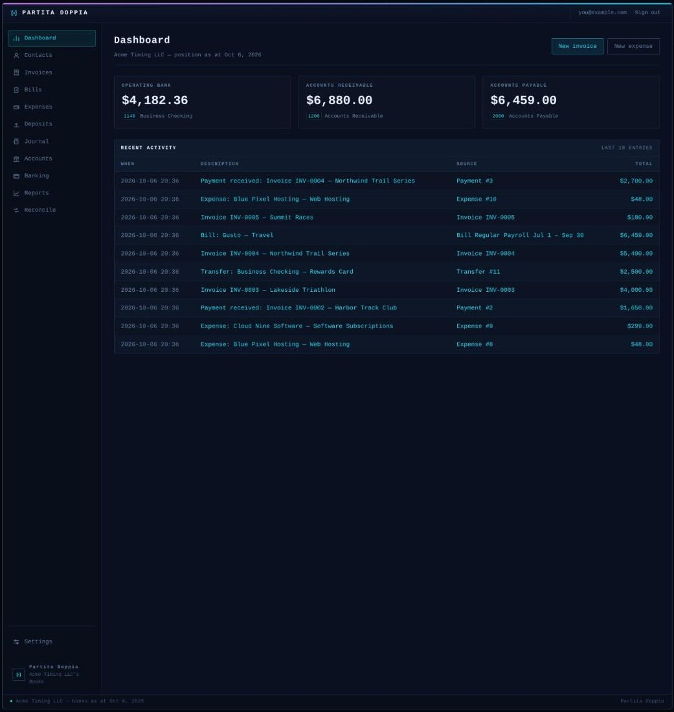
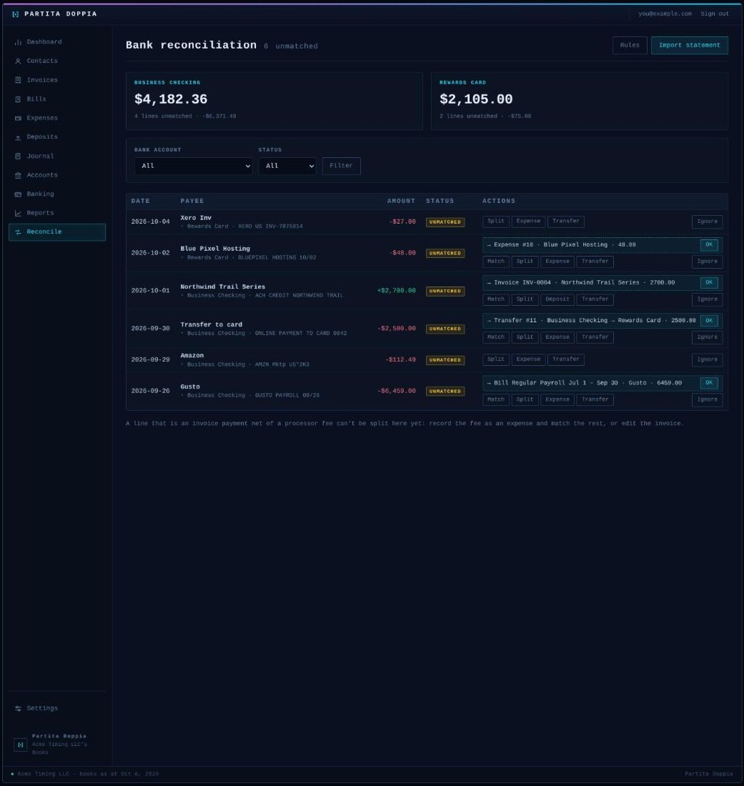
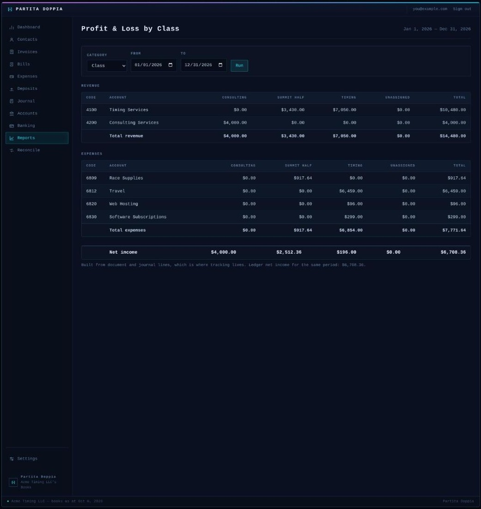

Partita Doppia
Every line balanced.
Double-entry books for one small business. Invoices, bills, spend and receive money, transfers, manual journals, bank reconciliation, Xero-style tracking categories and the standard reports, in a Rails 8 app that runs on SQLite and needs nothing else.
Built by someone leaving Xero who wanted to keep the parts that worked and own the rest.
What it does
- Documents post to the ledgerInvoices and bills accrue and take payments. Expenses and deposits move money through a bank account, transfers between two, manual journals cover the rest. Each one carries line items, attachments and a history of who changed what.
- Bank reconciliationA nightly SimpleFIN feed or uploaded CSV, OFX and QFX statements. Each line gets a ranked suggestion with a one-click OK, or match it, split it, categorise it, or pair it with its transfer. Bank rules do the repetitive ones. Every match is undoable.
- Tracking categoriesUp to two active categories the way Xero does them, one option per category on any line, and a profit and loss broken out by option.
- ReportsProfit and loss, balance sheet, trial balance, general ledger, receivables and payables aging, profit and loss by tracking category.
- InvoicingNumbered invoices with a PDF, emailed to the customer with the PDF attached, recurring invoices, and a per-document activity log.
- Xero import over the APIPull the chart of accounts, tax rates, contacts, tracking categories, every invoice and bill with payments, spend and receive money, transfers and manual journals. Re-running updates in place. Xero's CSV exports upload as a fallback.
- Passwordless sign-inEvery sign-in emails a six-digit code. An installation can instead trust an SSO hub's cookie.
- Dark and light themesChosen per person, in a terminal-flavoured UI.
Screens



Stack
- Ruby 3.4
- Rails 8
- SQLite
- Solid Queue, Cache, Cable
- Hotwire
- Importmap, no build step
- Postgres
- Redis
- Node
- Sidekiq
One Ruby process, one SQLite file on a writable disk, and an SMTP account for login codes and invoices. Any host that runs a Rails app will do.
Quick start
$ git clone https://github.com/joelgaff/partita_doppia.git
$ cd partita_doppia
$ bin/setup # bundle, db:prepare, enables the pre-push hook
$ EDITOR=nano bin/rails credentials:edit
$ bin/rails serverOpen the site. With nobody signed in yet it shows Set up your books: name the entity and the first person, confirm the email with a six-digit code, and you're in. The README covers credentials, Xero history and bank feeds.